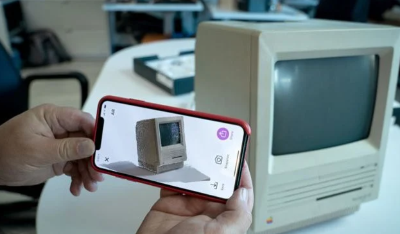
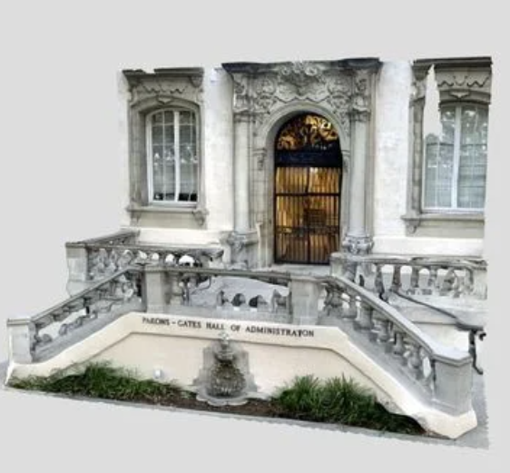

TENDENCIAS TECNOLOGÍAS 2: ESCANEO 3D
SESIÓN 23 (04-06-2024)

Un escáner 3D es un dispositivo avanzado que se utiliza para capturar datos detallados
sobre la forma, textura y, en algunos casos, el color de objetos o entornos del mundo real. Esta
tecnología permite crear modelos digitales tridimensionales precisos que pueden ser manipulados
y utilizados en una variedad de aplicaciones.
El proceso de escaneo 3D implica el uso de diferentes métodos y tecnologías, como la luz
estructurada, la fotogrametría, el escaneo láser y el escaneo por tomografía, entre otros. Cada
método tiene sus propias ventajas y se elige según la precisión requerida, el tamaño del objeto
y el entorno de trabajo.
Los modelos 3D obtenidos mediante escaneo 3D son esenciales en campos como la ingeniería, la
fabricación, el diseño industrial, la medicina (por ejemplo, para la creación de prótesis
personalizadas), el arte y la arqueología (para la preservación y estudio de artefactos
históricos), el entretenimiento (en la creación de efectos visuales y animaciones), y muchos
más.
La tecnología de escaneo 3D está en constante evolución, lo que hace que los escáneres sean más
accesibles, precisos y fáciles de usar con el tiempo. Esto no solo amplía las aplicaciones
prácticas de la tecnología, sino que también impulsa la innovación en diferentes industrias al
permitir la captura y manipulación digital precisa de objetos y entornos del mundo físico.
SESIÓN 24 (05-06-2024)
 El escaneo 3D es una tecnología versátil que utiliza varios métodos para capturar la forma tridimensional de objetos y entornos. Aquí te explico los métodos mencionados:
- Escaneo Láser: Este método utiliza un láser para proyectar una línea o un punto sobre la superficie del objeto. Un sensor captura la deformación de la línea o punto sobre la superficie, lo que permite determinar las coordenadas 3D del objeto. Los escáneres de triangulación láser son un ejemplo de esta técnica. Estos dispositivos son útiles para capturar detalles precisos de objetos pequeños o grandes estructuras con alta resolución.
- Fotogrametría: La fotogrametría se basa en el análisis de múltiples fotografías tomadas desde diferentes ángulos alrededor del objeto o entorno que se desea escanear. Utilizando software especializado, se identifican puntos en común entre las imágenes para calcular la posición y forma tridimensional del objeto. Este método es ampliamente utilizado en aplicaciones móviles de escaneo 3D y software de fotogrametría, siendo accesible y útil para capturar grandes áreas o objetos complejos.
- Luz Estructurada: En este método, se proyecta un patrón de luz estructurada (como una rejilla o franjas) sobre la superficie del objeto. Un sensor captura cómo este patrón se deforma sobre la superficie del objeto. La información capturada se utiliza para calcular la forma tridimensional del objeto. Los escáneres de luz estructurada son comunes en aplicaciones donde se requiere una alta precisión y velocidad de escaneo, como en el control de calidad industrial y la ingeniería inversa.